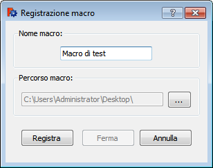

|
| Emplacement du menu |
|---|
| Aucun |
| Ateliers |
| Tous |
| Raccourci par défaut |
| Aucun |
| Voir aussi |
| Exécuter la macro dans l'éditeur |
Description
Cette fonction enregistre une macro de toutes les opérations faites dans l'espace de travail 3D.
La fonction peut être accessible par Macro → Enregistrement de macros ..., ou sur le bouton  Enregistrement de macros de la barre d'outils
Enregistrement de macros de la barre d'outils  des macros.
des macros.
Utilisation
Cliquez sur le bouton  Enregistrement de macros, une fenêtre s'affiche :
Enregistrement de macros, une fenêtre s'affiche :
|  |
|
{kind=link}
Une fois votre travail terminé, cliquez sur le bouton  Arrêter l'enregistrement de la macro, pour stopper l'enregistrement de votre macro.
Arrêter l'enregistrement de la macro, pour stopper l'enregistrement de votre macro.
La macro, est récupérable par Macro → Macros ..., ou sur le bouton  Exécuter la macro dans l'éditeur de la barre d'outils
Exécuter la macro dans l'éditeur de la barre d'outils  des macros, et, être exécutée ou modifiée à volonté.
des macros, et, être exécutée ou modifiée à volonté.
Exemple
Cliquez sur le bouton  entrez un nom pour la macro et validez, ouvrez un document, créer un cube, changer la couleur arrêter la macro avec le bouton
entrez un nom pour la macro et validez, ouvrez un document, créer un cube, changer la couleur arrêter la macro avec le bouton  .
.
La macro est disponible dans votre emplacement des macros.